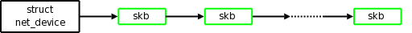
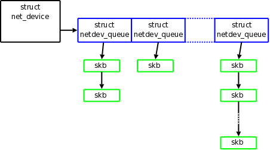

Multiqueue networking

"Vaguely" because the list of sk_buff structures (SKBs - the internal representation of packets) does not exist in this form within the kernel; instead, the driver maintains the queue in a way that the hardware can process it.
This is a scheme which has worked well for years, but it has run into a fundamental limitation: it does not map well to devices which have multiple transmit queues. Such devices are becoming increasingly common, especially in the wireless networking area. Devices which implement the Wireless Multimedia Extensions, for example, can have four different classes of service: video, voice, best-effort, and background. Video and voice traffic may receive higher priority within the device - it is transmitted first - and the device can also take more of the available air time for such packets. On the other hand, the queues for this kind of traffic may be relatively short; if a video packet doesn't get sent on its way quickly, the receiving end will lose interest and move on. So it might be better to just drop video packets which have been delayed for too long.
On the other hand, the "background" level only gets transmitted if there is nothing else to do; it is well-suited to low-priority traffic like bittorrent or email from the boss. It would make sense to have a relatively long queue for background packets, though, to be able to take full advantage of a lull in higher-priority traffic.
Within these devices, each class of service has its own transmit queue. This separation of traffic makes it easy for the hardware to choose which packet to transmit next. It also allows independent limits on the size of each queue; there is no point in filling the device's queue space with background traffic which is not going to be transmitted in any case. But the networking subsystem does not have any built-in support for multiqueue devices. This hardware has been driven using a number of creative techniques which have gotten the job done, but not in an optimal way. That may be about to change, though, with the advent of David Miller's multiqueue transmit patch series.
The current code treats a network device as the fundamental unit which is managed by the outgoing packet scheduler. David's patches change that idea somewhat, since each transmit queue will need to be scheduled independently. So there is a new netdev_queue structure which encapsulates all of the information about a single transmit queue, and which is protected by its own lock. Multiqueue drivers then set up an array of these structures. So the new data structure can, with sufficient imagination, be seen to look something like this:

Once again, the actual lists of outgoing packets normally exist in the form of special data structures in device-accessible memory. Once the device has these queues set up for it, the various policies associated with each class of service can be implemented. Each queue is managed independently, so more voice packets can be queued even if some other queue (background, say) is overflowing.
David would appear to have worked hard to avoid creating trouble for network driver developers. Drivers for single-queue devices need not be changed at all, and the addition of multiqueue support is relatively straightforward. The first step is to replace the alloc_etherdev() call with a call to:
struct net_device *alloc_etherdev_mq(int sizeof_priv,
unsigned int queue_count);
The new queue_count parameter describes the maximum number of transmit queues that the device might support. The actual number in use should be stored in the real_num_tx_queues field of the net_device structure. Note that this value can only be changed when the device is down.
A multiqueue driver will get packets destined for any queue via the usual hard_start_xmit() function. To determine which queue to use, the driver should call:
u16 skb_get_queue_mapping(struct sk_buff *skb);
The return value is an index into the array of transmit queues. One might well wonder how the networking core decides which queue to use in the first place. That is handled via a new net_device callback:
u16 (*select_queue)(struct net_device *dev, struct sk_buff *skb);
The patch set includes an implementation of select_queue() which can be used with WME-capable devices.
About the only other required change is for multiqueue drivers to inform the networking core about the status of specific queues. To that end, there is a new set of functions:
struct netdev_queue *netdev_get_tx_queue(struct net_device *dev,
u16 index);
void netif_tx_start_queue(struct netdev_queue *dev_queue);
void netif_tx_wake_queue(struct netdev_queue *dev_queue);
void netif_tx_stop_queue(struct netdev_queue *dev_queue);
A call to netdev_get_tx_queue() will turn a queue index into the struct netdev_queue pointer required by the other functions, which can be used to stop and start the queue in the usual manner. Should the driver need to operate on all of the queues at once, there is a set of helper functions:
void netif_tx_start_all_queues(struct net_device *dev);
void netif_tx_wake_all_queues(struct net_device *dev);
void netif_tx_stop_all_queues(struct net_device *dev);
Naturally, there are a few other details to deal with, and the multiqueue
interface is likely to evolve somewhat over time. At one point, David was
hoping to have this feature ready for inclusion into 2.6.27, but that goal
looks overly ambitious now. It does seem that much of the ground work will be merged in the
next development cycle, though, meaning that full multiqueue support should
be in good shape for merging in 2.6.28.
| Index entries for this article | |
|---|---|
| Kernel | Networking |
Posted Jul 10, 2008 3:26 UTC (Thu)
by walken (subscriber, #7089)
[Link] (4 responses)
Posted Jul 10, 2008 5:46 UTC (Thu)
by johill (subscriber, #25196)
[Link] (3 responses)
Posted Jul 10, 2008 8:03 UTC (Thu)
by walken (subscriber, #7089)
[Link] (2 responses)
Posted Jul 10, 2008 14:05 UTC (Thu)
by gdt (guest, #6284)
[Link]
I don't know about DaveM's work, but real routers offer differing QoS policies per class-of-traffic queue (eg, a limited queue length with tail drop for a class with voice traffic, a long queue with RED drop for classes with TCP traffic). Since Linux implements scheduling and queue policies using qdiscs, a qdisc per queue would make sense.
Posted Jul 21, 2008 10:48 UTC (Mon)
by eliezert (subscriber, #35757)
[Link]
Posted Jul 18, 2008 9:56 UTC (Fri)
by willp (guest, #52971)
[Link] (1 responses)
Posted Jul 24, 2008 0:10 UTC (Thu)
by efexis (guest, #26355)
[Link]
Posted Jul 29, 2008 15:59 UTC (Tue)
by sylware (guest, #35259)
[Link]
Posted May 18, 2010 15:29 UTC (Tue)
by softarts (guest, #66376)
[Link]
Multiqueue networking
I'm confused, I thought there was already a multiqueue implementation in the kernel ? (see
Documentation/networking/multiqueue.txt in 2.6.25...)
Yes, there is indeed already a multiqueue implementation. See davem's blog for an explanation better than I could give.
Multiqueue networking
Multiqueue networking
Hmmm, thanks for the link :) I'm still very confused though.
Both in his blog and in the patch series initial comment, David mentions duplicating the
qdiscs so that he'd have one per queue rather than one per device. I'm confused about whether
this is supposed to be just an implementation detail to reduce locking somehow, or if this
would be exposed in the traffic shaping user visible interface (in which case I don't
understand how you'd use that :)
Multiqueue networking
Multiqueue networking
I think that the main issue was to push the tx lock into the queue.
This was a major shortcoming of the previous implementation.
(Virtualization) Will this help widen the networking bottleneck that exists for a host OS that runs many virtual machines (since it's currently a many:one sharing of one queue)...? Multiqueue networking
This is discussed elsewhere at ACM: http://www.acmqueue.org/modules.php?name=Content&pa=showpage&pid=527 as a problem that needs a solution... "The use of multiqueue network interfaces in this way should improve network virtualization performance by eliminating the multiplexing and copying overhead inherent in sharing I/O devices in software among virtual machines." for instance...
Perhaps this is a path for KVM development?
Multiqueue networking
Virtual machine networking performance can be improved by virtualising tcp offloading
functions often found in hardware network cards. Instead of the virtual machine doing all the
tcpy stuff then ethernetty stuff and passing the packet to the host machine which then has to
do some processing on it as well, the virtual machines asks its hardware accelerator functions
to take care of it... this can put it more quickly into the hosts actual hardware and save a
chunk of double processing.
I'm not sure about multiple hardware queues. The hardware, drivers, and virtual machine would
have to be designed for it, allowing each virtual machine direct access to a hardware queue,
with the hardware potentially having to do virtual memory mapping so the virtual machine can't
use it to grab data from the hosts memory, and then the hardware deciding how to schedule
packets from each machine over each other. Aside from all of this, giving a virtual machine
direct access to the real hardware somewhat defeats the purpose of it.
Multiqueue networking
Basically we are taking the path of hardware accelerated traffic classes.
Indeed, now the layer above would feed the queues according to the QoS bandwidth allocated for
each one of them... may we have in the near futur hardware QoS bandwidth on those queues too?
That would offload work from the IPv6 stack for traffic classes management.
Multiqueue networking
has any change in user space?(socket system call)
how to let the application read from different queue?